◆「迦勒底男孩收藏2018Pick Up召喚(每日交替)」期間◆
期間:2018年3月7日(三) 20:00～3月21日(三) 11:59
舉辦期間限定「迦勒底男孩收藏2018Pick Up召喚(每日交替)」！
「★5(SSR)亞瑟・潘德拉剛〔Prototype〕」以期間限定登場！
以及本次由於是“男孩收藏”，只限包含根據章節進行追加Servant的男性Servant為召喚對象。
對象★5(SSR)男性Servant以每日交替Pick Up，「★5(SSR)亞瑟・潘德拉剛〔Prototype〕」常駐Pick Up。
※亞瑟・潘德拉剛〔Prototype〕在Pick Up期間結束後不會追加到故事召喚。
※以每日交替Pick Up的★5(SSR)男性Servant在Pick Up期間結束後也會在故事召喚被抽出。
詳情請在聖晶石召喚畫面左下的召喚詳細確認。
另外，有關“男孩收藏”的概念禮裝「★5(SSR)スター・オブ・キャメロット」「★5(SSR)探偵ヱドモン～異邦潜入編～」「★4(SR)ガトー・オ・ショコラ」「★4(SR)黄金と太陽の勝負師」「★4(SR)カルデア特捜班」「★3(R)ウェルカム・ダイナー」「★3(R)マスケティアーズ」「★3(R)雨上がりの君」也以期間限定登場！
※「★3(R)ウェルカム・ダイナー」「★3(R)マスケティアーズ」「★3(R)雨上がりの君」在Pick Up期間中，也能在友情點數召喚獲得。
Pick Up期間中，期間限定Servant、Pick Up Servant、期間限定概念禮裝的出現機率提升！
10次召喚中確定1張★4(SR)以上和確定1位★3(R)以上的Servant！
※確定★4(SR)以上包含Servant和概念禮裝。
※所謂「出現機率提升」意指比同稀有度的Servant及概念禮裝出現機率更高的設定。
| 每日交替Pick Up期間 | 每日交替Pick Up內容 |
|---|---|
| 3月7日(三) 20:00～ 3月9日(五) 22:59 |
亞瑟・潘德拉剛〔Prototype〕 |
| 3月9日(五) 23:00～3月10日(六) 22:59 | 亞瑟・潘德拉剛〔Prototype〕 阿周那 |
| 3月10日(六) 23:00～3月11日(日) 22:59 | 亞瑟・潘德拉剛〔Prototype〕 迦爾納 |
| 3月11日(日) 23:00～3月12日(一) 22:59 | 亞瑟・潘德拉剛〔Prototype〕 諸葛孔明〔埃爾梅羅II世〕 |
| 3月12日(一) 23:00～3月13日(二) 22:59 | 亞瑟・潘德拉剛〔Prototype〕 庫・夫林〔Alter〕 |
| 3月13日(二) 23:00～ 3月16日(五) 22:59 |
亞瑟・潘德拉剛〔Prototype〕 |
| 3月16日(五) 23:00～3月17日(六) 22:59 | 亞瑟・潘德拉剛〔Prototype〕 尼古拉・特斯拉 |
| 3月17日(六) 23:00～3月18日(日) 22:59 | 亞瑟・潘德拉剛〔Prototype〕 弗拉德三世(Berserker) |
| 3月18日(日) 23:00～3月19日(一) 22:59 | 亞瑟・潘德拉剛〔Prototype〕 奧茲曼迪亞斯 |
| 3月19日(一) 23:00～3月20日(二) 22:59 | 亞瑟・潘德拉剛〔Prototype〕 恩奇杜 |
| 3月20日(二) 23:00～3月21日(三) 11:59 | 亞瑟・潘德拉剛〔Prototype〕 |
※請注意會以每日交替變更Pick Up的Servant。
※Pick Up期間中，尼古拉・特斯拉就算通過第四特異點前也能入手。
※Pick Up期間中，庫・夫林〔Alter〕就算通過第五特異點前也能入手。
介紹期間限定Servant亞瑟・潘德拉剛〔Prototype〕的寶具演出！
在「Fate/Grand Order」官方網站內的公告中，公開了「★5(SSR)亞瑟・潘德拉剛〔Prototype〕」的寶具演出。敬請確認。
介紹阿周那、尼古拉・特斯拉、恩奇杜、迦爾納、奧茲曼迪亞斯、諸葛孔明〔埃爾梅羅II世〕、弗拉德三世(Berserker)、庫・夫林〔Alter〕的寶具演出！
在「Fate/Grand Order」官方網站內的公告中，公開了「★5(SSR)阿周那」「★5(SSR)尼古拉・特斯拉」「★5(SSR)恩奇杜」「★5(SSR)迦爾納」「★5(SSR)奧茲曼迪亞斯」「★5(SSR)諸葛孔明〔埃爾梅羅II世〕」「★5(SSR)弗拉德三世(Berserker)」「★5(SSR)庫・夫林〔Alter〕」的寶具演出。敬請確認。
| 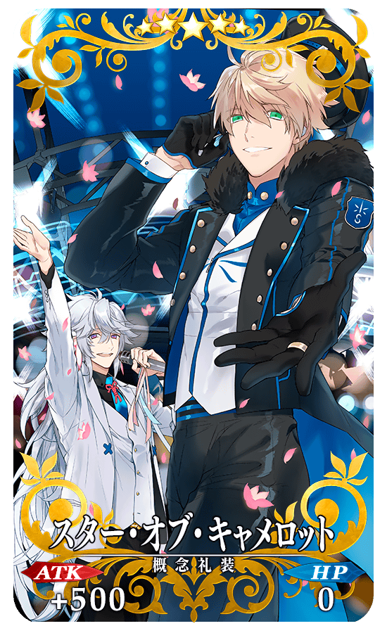 |
★★★★★SSR |
| 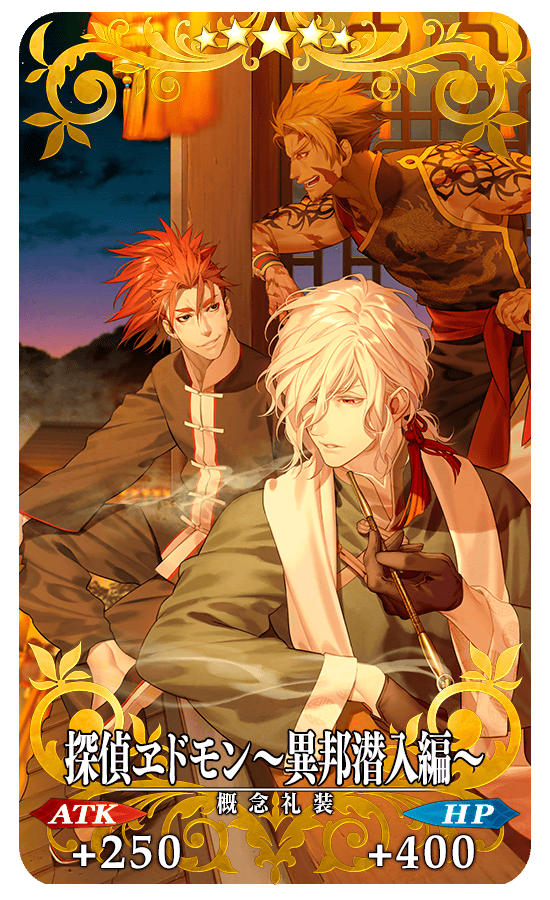 |
★★★★★SSR |
| 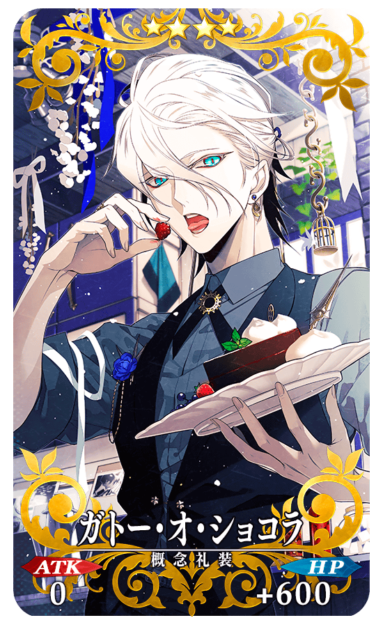 |
★★★★SR |
| 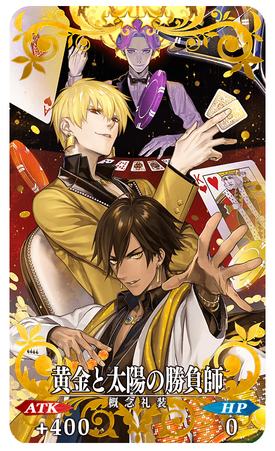 |
★★★★SR |
| 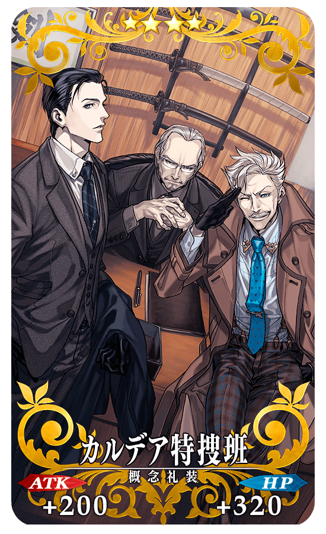 |
★★★★SR |
| 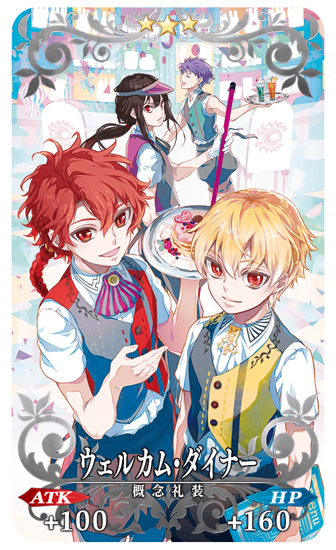 |
★★★R |
| 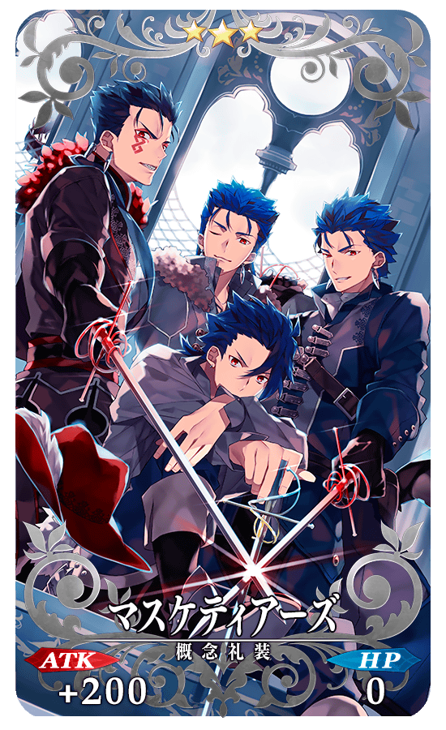 |
★★★R |
| 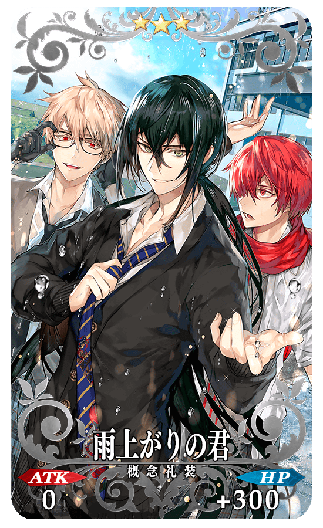 |
★★★R |
為了記念「迦勒底男孩收藏2018」的舉辦，舉辦從期間限定概念禮裝之中選出喜愛的1張收下「期間限定概念禮裝贈送宣傳活動」。
詳情請在此處的公告確認。


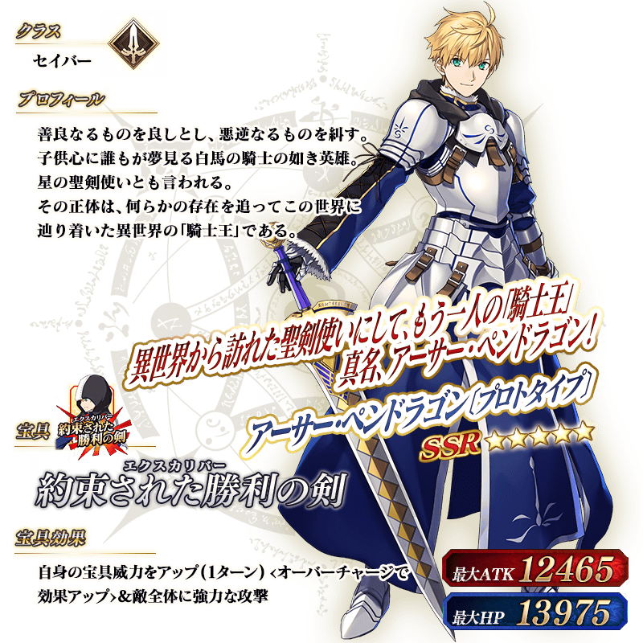
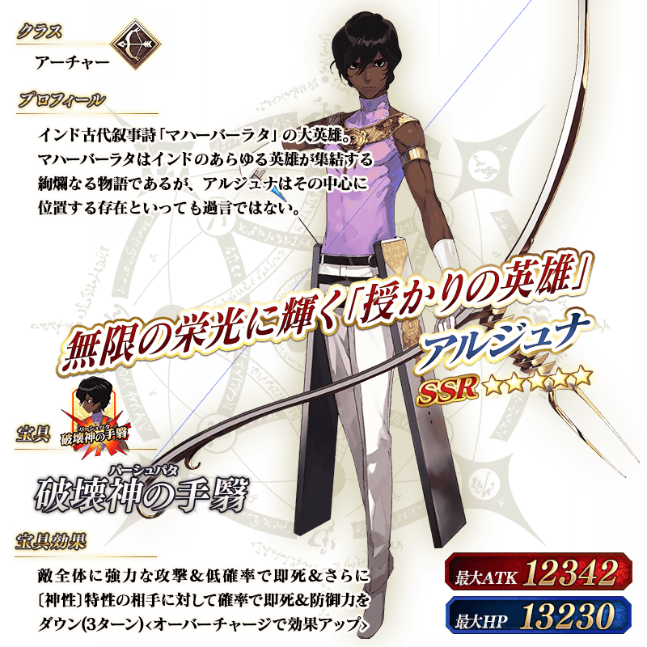
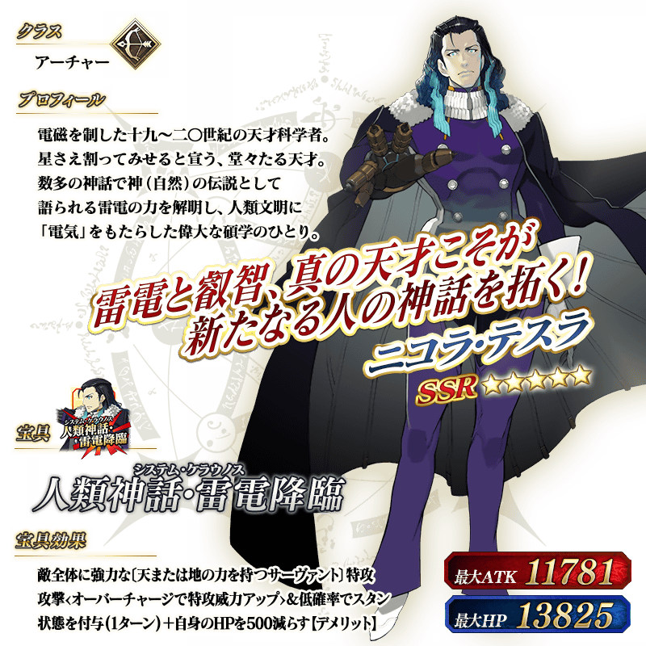

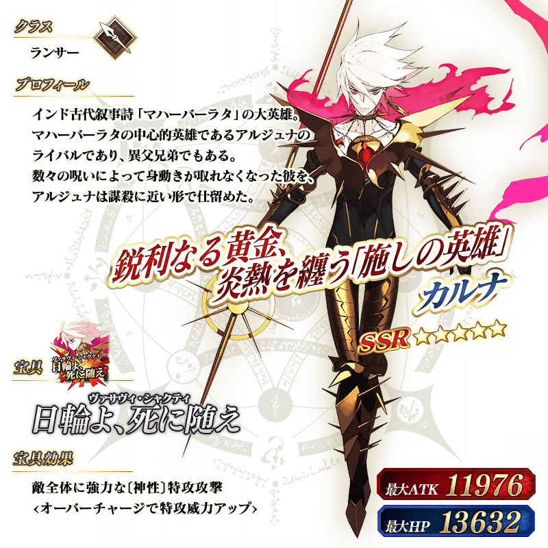
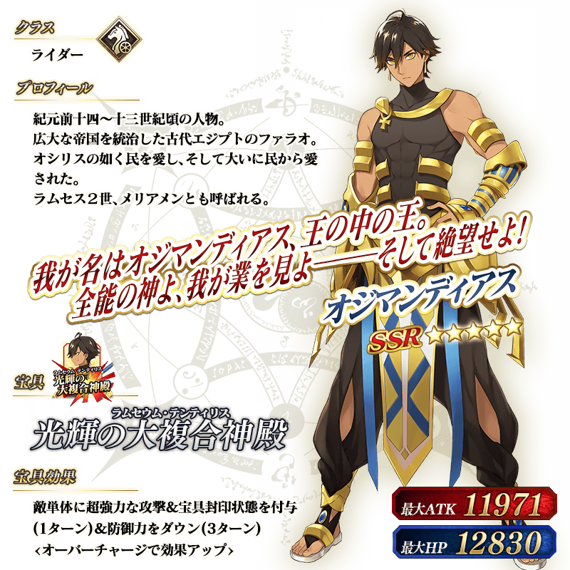
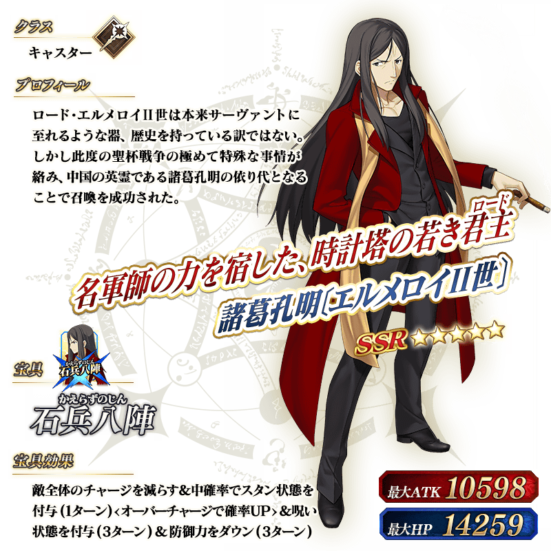

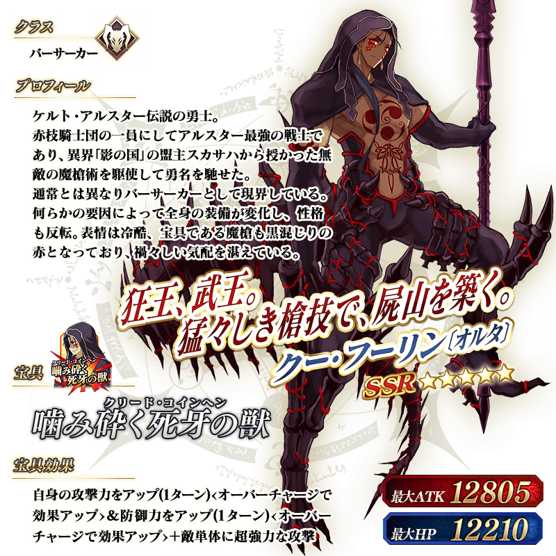
關於期間限定「迦勒底男孩收藏2018」的詳細請自下述橫幅確認。